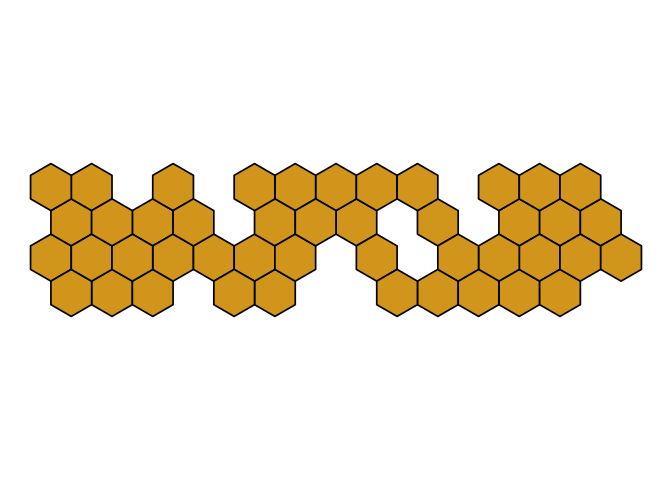

- Welcome and explanation
- CV
- Bio
- Recent Talks
- Projects and Goals
- What I’m working on: my packages and repos
- unblogs: experiments and code demos
‘Do not scatter your energies’,
These days I’m focused a lot on package building. I need a personal website update update. Instead of trying to reboot my blogdown website or convert to quarto, I’m just using package building architecture via pkgdown to create an updated personal webpage. I may explore some meta package writing here as well.

Bio
Hello and welcome! I’m a data scientist and educator that’s especially passionate about using visualization to facilitate communication and statistical learning. I’m particularly motivated by the elegance and power of the “Grammar of Graphics” framework, and am exploring how to further empower ggplot2 users to take advantage of the extension space by 1) working on new extension packages for statistical education and 2) providing new points of entry into the ggplot2 world (tutorials/recipes as well as community building).
For the last three years, I’ve worked in the Dean’s Data Cell at the United States Military Academy at West Point in a data analytics and teaching dual role. I worked closely with stakeholders and other members of the data team to deliver actionable insights and meet institutional reporting requirments. I worked on the Deans Data Cell infrastructure towards, code-first, reproducible and elegant data products. I also taught sections of MA206 Introduction to Statistics and Probability in the Mathematics Department, and oversaw five independent studies focused on tool-building for statistical education.
I have taught statistical methodology at the University of Denver’s Josef Korbel School of International Studies Visiting Teaching Assistant Professor and have lectured at the Technische Universität Dresden’s Center for International Studies and have consulted on a project with the Violence Prevention Research Program at the University of California Davis. My PhD is from the University of Illinois, where my dissertation won 2018 Burkholder Award for Best Dissertation in the Political Science department of the University of Illinois.
I study effectiveness of international institutions and law especially in the area of security. More broadly, my areas of study have been International Relations, Methodology, and Comparative Politics with an emphasis on Latin American Politics. My dissertation focused on compliance with supranational law, using UN Security Council resolutions as my principle case; I conducted dissertation field research in Brazil in the Federal House of Deputies.
I have extensive experience in data analysis and teaching data science. I worked as a statistics consultant, at the Applied Technologies of the Arts and Science (ATLAS), at the University of Illinois from 2013-2015. I also served “Methods TA” in Political Science in the 2015-2016 academic year at the University of Illinois, providing assistance and expertise both to undergraduate and graduate students. At TU Dresden, in 2018, I designed and taught a course introducing students to data science tools and statistical analysis for political research. I primarily teach methodology and data science courses at the Korbel School. Research interests in methodology include communicating uncertainty, visual exposition of statistical concepts and electoral rules.
I have been awarded the Fulbright Fellowship (Argentina 2008), Foreign Language and Area Studies Fellowships (2009-2011), Nelle Signor Travel Fellowship (Brazil 2011) and have participated in specialized workshops including the Empirical Implications of Theoretical Models (2010), Public Policy and Nuclear Threats (2013), the Berkeley Institute for Transparency in the Social Sciences (2015) workshops, the Zurich Summer School for Women in Political Methodology (2017), and the Lorentz Workshop: Empirical Research on International Organizations (2018).
Previously to my academic career, I worked at the U.S. Department of Commerce’s Bureau of Industry and Security in chemical and biological export controls and have worked in lithium-ion battery failure diagnostics at the Chemical Engineering Division of Argonne National Laboratory.
Recent Talks
- Speaking ggplot2, April 2022, West Point Data Analytics Series
- Creating new geom_*s for richer statistical storytelling, May 2022, West Point Department of Mathematics Talk Series
- Flipbooks, January 2020, RStudio Conference
- tidypivot
- Extending ggplot2 statistical geometries, MAA Metro New York May 2021
- Intro to Network Analysis and Visualization
- Shallow Fakes: Assessing the potential for spoofing and faking in data visualization and what to do about it, University of Denver May 2019
Projects and Goals
- ggplot2 flipbook
- a ggplot2 grammar guide
- easy geom recipes: diving into defining compute_group ggprotos
- more geom recipes: cases when compute_group is not enough (compute_panel)
- ggtedius workshop
- ma206verse/stats101verse
- ggnc, ggnorthcarolina, ggbrazil, and beyond: geographic location names as positional aesthetics
What I’m working on: my packages and repos
ggtedious a demo package for messages, warnings, errors and test in ggplot2 extension “Testing your code can be painful and tedious, but it greatly increases the quality of your code.”
ggsmoothfit extending stat_smooth to return fitted values and residuals R 1 Updated last week more_theme_easing_ideas R Updated last week
ggols visual expositions of simpler linear models CSS 6 1 Other Updated 2 weeks ago ggverbatim tabular data to tabular viz R 2 Updated 3 weeks ago
readme2pkg collection of functions to write packages and promo mostly from within README.Rmd R Updated 3 weeks ago
ggjudge Say what you think about a plot up front R Updated 3 weeks ago
flipbookr Presenting code step-by-step and side-by-side with its output R 191 19 Other Updated 3 weeks ago
ggwipe remove stat and geom layers from plot; return the last plot but wiped Updated last month
gglobalclocks global clocks! 1 Updated on Jul 23
ggnorthcarolina R 3 Updated on Jul 20
tidybernoulli probability branching in data frames matrix probability tidy-data
ggnc North Carolina specific geoms experiment HTML Updated on Jun 27 easy-geom-recipes
tidypivot Declarative group-wise count and compute, describing your target table R 8 Other Updated on Jun 22
ggdistricts R Updated on Jun 15
ggstates R Updated on Jun 12
ggbody using ggplot2 w/ body atlases R 1 Updated on May 30
ma206distributions data-science ggplot2 statistics data-analysis R 2 Other Updated on May 1
ggfips A new approach to ggplot spatial APIs as demonstrated with with county fips codes R 1 Updated on Apr 26
everyday_ggplot2_extension a practical approach to ggplot2 extension 4 Updated on Apr 26
tidytitanic flat versions of the r titanic data R 1 Other Updated on Apr 17
ggbrazil Updated on Apr 17
ggcirclepack Experimental; write up for ggplot2 extenders meet up R 4 Updated on Apr 14 ma206equations Make writing equations easy in markdown and plots R Other Updated on Apr 10
codequote4shiny Return R code that will produce plot/df/text in a shiny app. For package demos and teaching purposes 1 Updated on Mar 9
ggchalkboard R 2 Updated on Nov 26, 2022
ggxmean R 60 3 MIT License Updated on Oct 11, 2022
tidytuesday_colorswatches leaf through tidytuesday datasets HTML 1 Updated on Oct 5, 2022
ggsample spin off of ggxmean, educational, random sampling, bootstrapping etc R 1 Other Updated on Aug 19, 2022
tabylextra For flattening, lengthening janitor tabyls R 1 Updated on Jul 7, 2022
ggstamp stamp_* as an API for annotation layers R 37 Updated on Jun 27, 2022
ma206datapackageresourses Private Share and prepare to build ma206data package Updated on Apr 27, 2022 ggpivot
ggpivot
ggquiet R 1 Other Updated on Jan 17, 2022 codeexplode explodes code CSS 2 Other Updated on Jan 17, 2022
doublecrochet Show .Rmd source paired with output! JavaScript 8 Other Updated on Jan 8, 2022
ggextend a toy package with examples of ggplot extension functions R 1 Updated on Oct 25, 2021
ay_2022_2_advanced_individual_study- Here, laying out some objectives for independent study, MA489! HTML 1 Updated on Oct 12, 2021
ggmemory parsing and presenting viz and manipulation code pipeline history using xaringan and flipbookr CSS 1 Other Updated on Oct 9, 2021
exampleexploder explodes examples R Other Updated on Aug 20, 2021
codehover Forked from arthurwelle/codehover Hoverable HTML Table for Displaying Intermediary Code Results (e.g. Pipes) R Updated on Aug 16, 2021
ggdirect Some functions that do more calculation in the background to get you there faster – especially focusing on direct labeling. R 1 Updated on Aug 14, 2021
xaringanPrinter convert xaringan/remark.js slides to Xaringan R 7 1 Other Updated on Jun 22, 2021 xaringanBuilder Forked from jhelvy/renderthis An R package for building xaringan slides into multiple outputs, including html, pdf, png, gif, pptx, and mp4. R Other Updated on Jun 20, 2021
madlibs For replacing words with blanks, or partial replacement of word with blanks CSS 1 Other Updated on May 8, 2021 package_templates_plus Where do the rendered package templates get to live or key package examples? Right here. HTML Updated on Apr 14, 2021
teaching_spring_2021 Some stuff for the students HTML Updated on Mar 17, 2021 education.rstudio.com
ma206_tidyverse_code_movies HTML 2 Updated on Jan 16, 2021